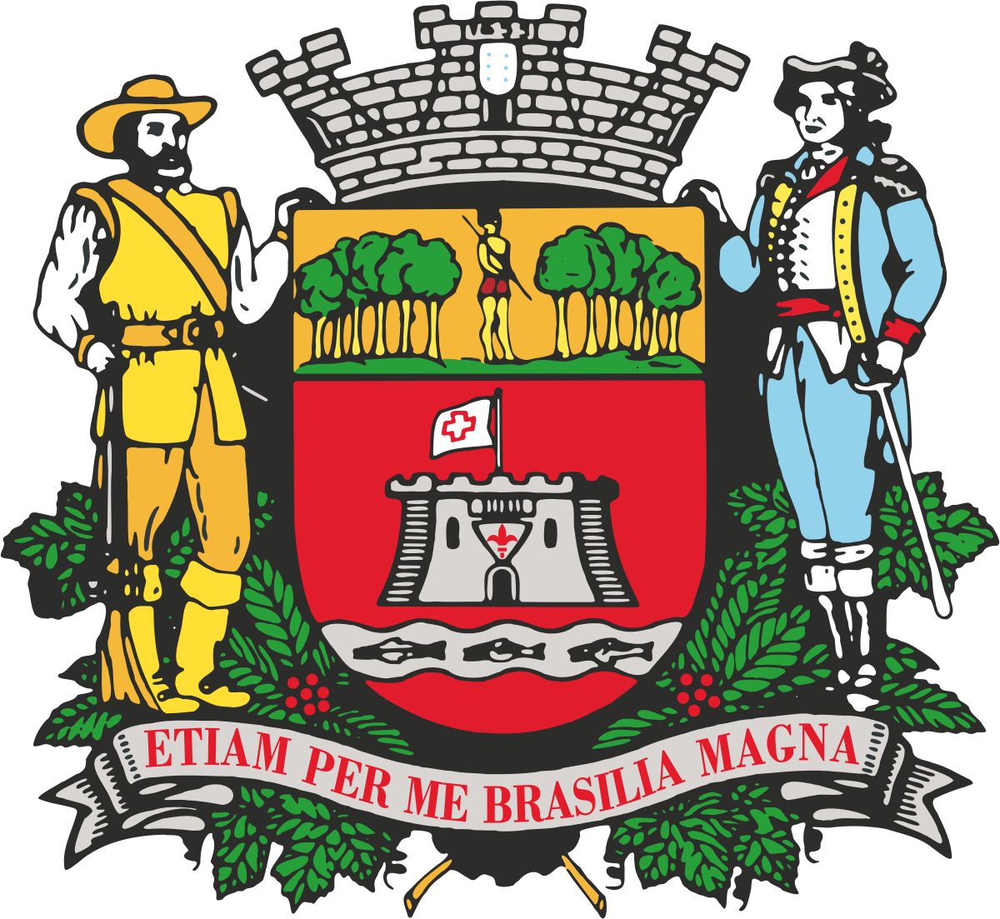

PÁGINA INICIAL
INFORMAÇÕES
HISTÓRIA
PARQUES
CONTATO
CONHEÇA SEU BAIRRO
12º GAC
Aeroporto
Agapeama
Anhangabaú
Bairro do Poste
Casa Branca / Setor Industrial
Caxambu
Cecap
Centro
Cerâmica Ibetel
Chácaras Maltoni
Colônia
Currupira
Distrito Industrial
Eloy Chaves
Engordadouro
Fazenda Grande
Gramadão
Horto Florestal
Hortolândia
Ivoturucaia
Jardim das Tulipas
Jardim do Lago
Jardim Ermida
Jardim Pacaembu
Jardim Samambaia
Jardim São Camilo
Jardim Tamoio
Jundiaí
Jundiaí Mirim
Malota
Marco Leite
Medeiros
Moisés
Nova Odessa
Parque Centenário
Parque do Colégio
Pinheirinhos / Represa
Ponte São João
Retiro
Rio Acima
Santa Gertrudesal
Setor Industrial
Torres São José
Traviú
Vale Azul
Vianelo / Bonfiglioli
Vila Alvorada
Vila Arens / Vila Progresso
Vila Maringá
Vila Municipal
Vila Nambi
Vila Rami
Vila Rio Branco